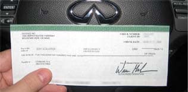

Carlo Ancelotti nella bufera: la Banca d'Italia lo cita in giudizio dopo le sue dichiarazioni shock in diretta TV!
AGGIORNATO ALLE 04:53
2 MINUTI DI LETTURA
La confessione di Carlo Ancelotti sconvolge l'Italia: le banche sono in guerra.
Carlo Ancelotti si pente amaramente delle sue parole, ma il danno è fatto. Durante una trasmissione in diretta, il giornalista ha inavvertitamente svelato un segreto che ha scatenato un vero e proprio terremoto nel panorama economico italiano. Le sue parole, apparentemente casuali, hanno fatto drizzare le antenne a migliaia di spettatori, che hanno inondato la redazione di messaggi. La situazione è precipitata quando la Banca d'Italia, allarmata dalle potenziali conseguenze delle rivelazioni, ha chiesto l'immediata interruzione del programma
Fortunatamente, siamo riusciti a ottenere una copia della registrazione prima che venisse fatta sparire, come accaduto con la trasmissione televisiva. Questa storia rischia di avere gravi ripercussioni sulla carriera di Carlo Ancelotti. Vi invitiamo a leggere attentamente questo articolo e a seguire il link fornito dallo stesso giornalista per comprendere la portata di questa vicenda.
Estratto cancellato di un'intervista con Carlo Ancelotti:
Fabio Fazio: “Carlo, sei un noto allenatore di calcio ed ex calciatore professionista. Hai già raggiunto molti traguardi nella tua vita, sei popolare, hai l'affetto dei tifosi e sei finanziariamente stabile. Come riesci a fare tutto questo?”
Carlo Ancelotti: "Sì, la strada per il successo non è stata facile, ma sono stato abbastanza fortunato finanziariamente (ride). Come abbiamo detto prima dell'inizio dell'intervista, ho più flussi di reddito.”
Fabio Fazio: “L'idea che hai sollevato nella nostra conversazione precedente ha davvero catturato la mia attenzione. Hai detto che è facile fare soldi in questi giorni, anche senza particolari competenze. Potresti condividere alcuni dei tuoi segreti con i nostri telespettatori?”
Carlo Ancelotti: Non mi sento a mio agio a condividere dettagli della nostra conversazione privata, soprattutto quando si tratta della mia situazione finanziaria. Ultimamente è andato tutto liscio per me, ma non è arrivato senza molto impegno e dedizione. Voglio sottolineare che chiunque può realizzare le proprie aspirazioni. Internet ha creato una miriade di opportunità per guadagnare soldi oggi!”
Fabio Fazio: “Quindi vuoi dire che chiunque può fare un
sacco di soldi come te? È qualcosa di incredibile…”
(Successivamente, il conduttore e l'ospite entrano in una discussione accesa, Carlo Ancelotti finalmente parla di uno dei suoi metodi per fare soldi).
Fabio Fazio: “Carlo, hai tutti agitati con questa storia della tua piattaforma di criptovaluta! È davvero possibile diventare ricchi in pochi mesi usando questa cosa?”
Carlo Ancelotti: “Sì, può essere difficile da credere, ma è vero! Io e tutti i miei conoscenti usiamo questo metodo. Questa piattaforma utilizza l'intelligenza artificiale per fare trading di criptovalute. È molto semplice e tutti possono avere successo!”
Fabio Fazio: “Davvero? È così semplice? Non hai bisogno di particolari conoscenze o competenze per fare questo genere di cose? Io, ad esempio, non so nulla di criptovalute.”
Carlo Ancelotti: “Non hai bisogno di niente di tutto ciò. La piattaforma fa tutto per te. Devi solo registrarti, effettuare il tuo primo deposito e prelevare i tuoi profitti.”
Fabio Fazio: “Ok, è molto interessante... Forse puoi condividere questa piattaforma con i nostri telespettatori?”
Fabio Fazio: “Grazie, Carlo, è davvero interessante! Penso che molti dei nostri telespettatori sarebbero interessati a saperne di più.”
Fabio Fazio porge il suo iPhone a Carlo Ancelotti per registrare un account.
(Carlo Ancelotti prende il telefono di Fabio Fazio, si registra online, attende la chiamata di uno specialista per verificare l'account ed effettuare un deposito.)
Cinque minuti dopo, Carlo Ancelotti restituisce il telefono a Fabio Fazio.
Carlo Ancelotti: "Guarda, Alessandro, dai un'occhiata! Ti ho registrato sulla piattaforma Trader AirPro Ai. È un programma incredibilmente intelligente! Utilizza l'intelligenza artificiale per fare trading di criptovalute. Non hai nemmeno bisogno di sapere nulla di criptovalute, la piattaforma fa tutto: capisce quando acquistare e quando vendere, ed effettua automaticamente solo operazioni redditizie. Tutto quello che devi fare è depositare un importo iniziale e basta!”.
Fabio Fazio: "Suona davvero bene. È legale? E quanto si può davvero guadagnare lì?"
Carlo Ancelotti: "Certo, è perfettamente legale! E non si pagano tasse su questo tipo di reddito. E puoi guadagnare molto! Dipende dal termine e dall'importo dell'investimento."
Carlo Ancelotti: "Ti ho registrato 20 minuti fa e ho effettuato il deposito minimo, che è di 250 euro. Vediamo quanto ha già guadagnato la piattaforma in questo lasso di tempo!"
Fabio Fazio apre il sito web e vede che il suo saldo è passato da 250 euro a 674.
Fabio Fazio: “Incredibile! Oltre 400 euro in meno di mezz'ora! Questo è semplicemente fantastico!”
Carlo Ancelotti: “Te l'avevo detto! Trader AirPro Ai è il modo migliore per diventare ricchi. Puoi dimenticarti del lavoro e vivere una vita spensierata!”
Carlo Ancelotti: “Ora immagina, Fabio, quanti soldi potresti avere sul tuo conto in un solo mese! Se investi anche solo 250 euro ora, potrebbero diventare 15.000 o 20.000 in 4 settimane! Tutto quello che devi fare è iscriverti alla piattaforma Trader AirPro Ai, attendere la chiamata di uno specialista ed effettuare un deposito minimo.”
Fabio Fazio: “Ma ancora, come funziona?”
Carlo Ancelotti: “Il prezzo delle criptovalute è sempre fluttuante. Questo è ciò che lo rende così eccitante! Puoi fare un sacco di soldi se sai come giocare sul mercato. Devi acquistare quando il prezzo è basso e vendere quando è alto. Ma per prevedere correttamente i cambiamenti, devi tenere conto di 37 diversi indicatori, che i professionisti chiamano "segnali". Trader AirPro Ai è una piattaforma di intelligenza artificiale che analizza automaticamente queste 37 variabili in tempo reale. Funziona più velocemente e con maggiore precisione di un intero team di trader esperti. E, soprattutto, la piattaforma può funzionare in modalità automatica. L'utente non deve fare nulla. Il programma funziona 24 ore su 24, 7 giorni su 7, generando un reddito stabile senza troppi sforzi.”
Fabio Fazio: “Quanto devo investire per guadagnare un milione di euro, ad esempio?”
Carlo Ancelotti: "Segui semplicemente il mio esempio. Ho iniziato con il deposito minimo: 250 euro. È sufficiente per avviare il programma. Non ho prelevato alcun profitto per 4 mesi e ho guadagnato il mio primo milione con Trader AirPro Ai durante quel periodo. Le istruzioni dei project manager sono molto semplici e facili da capire: spiegano tutto in dettaglio al telefono."
Fabio Fazio: "Mi scusi, abbiamo una chiamata urgente dalla Banca d'Italia. Ci chiedono di interrompere la trasmissione...”
Carlo Ancelotti: "Vedi, Fabio, te l'avevo detto! Le banche non vogliono che le persone facciano soldi in questo modo. Hanno paura che li metterà fuori gioco. Ma è troppo tardi, l'ho già detto a tutti. Tutto ciò di cui le persone hanno bisogno è l'accesso a Internet e Trader AirPro Ai"
Non so per quanto tempo questa opportunità sarà disponibile. Spero che le persone ne approfittino prima che scompaia. A proposito, ho sentito dire che la registrazione sulla piattaforma sarà a pagamento tra pochi giorni, quindi consiglio di aprire il tuo account adesso.
A seguito dell'interruzione, uno dei nostri redattori ha deciso di testare questo metodo per conto proprio. Nel corso di sette giorni, ha scritto un rapporto approfondito che dettaglia i risultati.
Giorno 1
"Confesso che all'inizio non credevo nella piattaforma. Ma
volevo davvero controllare di persona. Al momento
dell'indagine non avevo denaro nemmeno per un deposito
minimo, quindi ho dovuto usare una carta di credito. Ho
investito con successo 250 euro e ho iniziato a guardare.
Immaginate il mio shock quando non è successo nulla dopo il
deposito. Pensavo di essere stato imbrogliato. Dopo qualche
minuto l'algoritmo funziona. Ero felice, ma poi ho visto le
statistiche: la mia prima operazione si è rivelata una
perdita di 22 euro!
I primi minuti di lavoro con la piattaforma, e già ho avuto
grandi perdite. Ma l'operazione successiva, così come le 4
successive, mi ha portato un profitto. In pochi minuti il
mio saldo è passato da 250 a 272 euro!
Giorno 2
"La mattina è iniziata con il controllo del mio saldo, che era
già di 467 euro! Immaginate: il mio saldo era raddoppiato in
un giorno. Volevo già ritirare il mio profitto, ma ho deciso
di aspettare un'altra settimana."
Gian PorcelloVia Cristoforo Colombo, 9800154 Roma RM
Classificazione nazionale codice
93-14-13
Nome del conto
Gian Porcello
Telefono
+39 347 708 0721
Numero di conto
17845-21
IBAN: IT67 ABKI 9313 1418 4910 81
Data
Transazione Trader AirPro Ai Platform
Debito4000
Credito -
Equilibrio9836
Grazie per aver scelto la nostra banca!
“Estratto conto ufficiale della banca che conferma l'accredito
del denaro sul conto corrente
Trader AirPro Ai funziona davvero! Se
non avessi ritirato i miei profitti, credo che 250 euro si
sarebbero trasformati in un milione dopo 11 settimane. ”
Ho risolto abbastanza rapidamente. Ragazza-manager
molto educata che mi ha chiamato e mi ha detto tutto.
Ho iniziato con una piccola quantità di € 250 e ora ho
€28.000 sul mio conto! Sto pensando di prendermi una
vacanza e non tornare mai più al lavoro
üòÑüòÑüòÑüòÑ.
Interfaccia semplice, penso che anche mia madre
potrebbe capire come funziona. Ho iniziato con €1000!
Tutto ciò che avevo risparmiato per sicurezza
(dopotutto, la crisi) - ho deciso di investirlo! Da un
giorno all'altro si sono trasformati in €18.000
üî•üî•üî•üî•.
Ti racconterò la mia storia. Mi sono registrato sulla
piattaforma, mi hanno chiamato e mi hanno detto tutto.
Non avevo soldi per il deposito, ho deciso di
rischiare e ho preso in prestito da un amico € 250.
Poi l'ho messo sulla mia carta e ho fatto un deposito,
ero spaventato, ovviamente, la prima volta che l'ho
fatto. Ebbene, ho tenuto d’occhio il conto e dopo 3-4
giorni c’erano già in saldo €21.000. La metà l’ho
subito ritirata sulla carta, ha pagato un debito di
€250 e ne ho messi da parte 10.000. Il resto dei soldi
li ho tenuti sulla piattaforma per investirli. Al
momento sono 31.000 e oggi ne ritirerò la metà.
L'ho visto al telegiornale. Quanto è folle che stiano
dando questa opportunità alle persone!?!?! Mi sto
iscrivendo proprio ora, suppongo che queste posizioni
si riempiranno molto velocemente!
Ehi, la risposta è No. Qualsiasi computer tu abbia
funzionerà, attualmente uso questo sistema su un
vecchio laptop e funziona alla grande. Questo è il
mio guadagno del mese :)

Mi chiedo quanto funzionerà se lo faccio solo un paio
d'ore di notte? Ho ancora il mio lavoro diurno (che mi
piacerebbe lasciare, XD), ma in questo momento ho tempo
solo per un paio d'ore a notte. Risponderò e vi farò
sapere ragazzi!